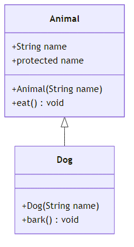

Java’nin Temelleri
2026
---
title: "Kalitim ve Interface'e Kisa On Bakis"
subtitle: "Nesne Yonelimli Programlamada extends, super, override, abstract class, interface ve polymorphism"
author: "Teknik Kitap Yazarı"
date: 2024-01-15
lang: tr
subject: "Java Programlama"
keywords: [kalitim, inheritance, interface, abstract, polymorphism, Java, OOP]
---Nesne yonelimli programlama (OOP), yazilim gelistirmede kod tekrarini azaltmak, bakimi kolaylastirmak ve gercek dunya kavramlarini modellemek icin kullanilan guclu bir paradigmadir. OOP’nin dort temel ilkesi vardir: Kalitim (Inheritance), Kapsulleme (Encapsulation), Cok Bicimlilik (Polymorphism) ve Soyutlama (Abstraction). Bu bolumde, kalitim ve arayuz (interface) kavramlarina kisa bir giris yapacak, extends, super, override, abstract class ve polymorphism temellerini ogreneceksiniz.
[!TIP] Pedagojik Not: Bu bolumdeki ornekleri kendi IDE’nizde calistirarak ogrenmeyi pekistirin. Her konsepti anlamadan bir sonrakine gecmeyin.
Java, tamamen nesne yonelimli bir dildir. Siniflar ve nesneler uzerine kuruludur. Kalitim, bir sinifin baska bir sinifin ozelliklerini ve davranislarini miras almasini saglar. Arayuzler ise bir sozlesme gibi davranarak, belirli metotlarin implemente edilmesini zorunlu kilar.
Bu bolumun sonunda:
- extends ve super anahtar kelimelerini kullanarak kalitim yapisi kurabileceksiniz.
- Metot override etme (gecersiz kilma) mantigini anlayacaksiniz.
- abstract sinif ve interface arasindaki farki kavrayacaksiniz.
- Polimorfizmin nasil calistigini ogreneceksiniz.
Kalitim, bir sinifin (alt sinif / subclass) baska bir sinifin (ust sinif / superclass) tum public ve protected uyelerine erismesini saglar. Java’da bir sinif yalnizca bir tane ust sinifa sahip olabilir (tekli kalitim).
Bir alt sinif olusturmak icin extends anahtar kelimesi kullanilir.
// Ust sinif
public class Animal {
protected String name;
public Animal(String name) {
this.name = name;
}
public void eat() {
System.out.println(name + " yemek yiyor.");
}
}// Alt sinif
public class Dog extends Animal {
public Dog(String name) {
super(name); // Ust sinifin yapicisini cagirir
}
public void bark() {
System.out.println(name + " havlıyor: Hav hav!");
}
}
### 2.2. super Anahtar Kelimesisuper, ust sinifin uyelerine (degiskenler, metotlar, yapicilar) erismek icin kullanilir. Ozellikle:
- Ust sinifin yapicisini cagirmak icin: super(parametreler)
- Ust sinifin override edilmis bir metodunu cagirmak icin: super.metotAdi()
public class SuperExample {
public static void main(String[] args) {
Dog dog = new Dog("Karabas");
dog.eat(); // Animal sinifindan miras alindi
dog.bark();
}
}Cikti:
Karabas yemek yiyor.
Karabas havlıyor: Hav hav![!WARNING]
super()cagrisi, alt sinif yapicisinin ilk satirinda olmalidir. Aksi takdirde derleme hatasi alirsiniz.
Alt sinif, ust sinifta tanimli bir metodu kendi ihtiyacina gore yeniden tanimlayabilir. Buna override denir.
public class Cat extends Animal {
public Cat(String name) {
super(name);
}
@Override
public void eat() {
System.out.println(name + " balik yiyor.");
}
}@Override annotation’u, derleyiciye bu metodun bir ust sinif metodunu gecersiz kilacagini belirtir. Bu, hata yapma olasiligini azaltir.
Her alt sinif yapicisi, dogrudan veya dolayli olarak bir ust sinif yapicisini cagirmalidir. Eger acikca belirtilmezse, Java derleyicisi parametresiz yapiciyi (super()) ekler.
public class ConstructorChain {
public static void main(String[] args) {
Cat cat = new Cat("Pamuk");
cat.eat();
}
}Cikti:
Pamuk balik yiyor.Java’da siniflar hiyerarsik bir yapi olusturabilir. Ornegin: Animal -> Mammal -> Dog.
Bazen bir sinifin dogrudan nesnesini olusturmak anlamli olmayabilir. Ornegin, “Hayvan” soyut bir kavramdir; sadece “Kopek” veya “Kedi” gibi somut turler vardir. Bu durumda abstract sinif kullanilir.
abstract anahtar kelimesi, sinifin veya metodun soyut oldugunu belirtir. Soyut siniflarin nesnesi olusturulamaz.
public abstract class AbstractAnimal {
protected String name;
public AbstractAnimal(String name) {
this.name = name;
}
// Soyut metot: govdesiz
public abstract void makeSound();
// Somut metot
public void sleep() {
System.out.println(name + " uyuyor.");
}
}Soyut metotlarin govdesi yoktur; alt siniflar bu metotlari implemente etmek zorundadir.
public class AbstractDog extends AbstractAnimal {
public AbstractDog(String name) {
super(name);
}
@Override
public void makeSound() {
System.out.println(name + " havlıyor.");
}
}| Ozellik | Abstract Sinif | Somut Sinif |
|---|---|---|
| Nesne olusturma | Hayir | Evet |
| Soyut metot | Icerilebilir | Iceremez |
| Kalitim | extends ile | extends ile |
Interface, tamamen soyut bir yapidir (Java 8’den itibaren default ve static metotlar eklenmistir). Bir sinifin “ne yapmasi gerektigini” belirtir, “nasil yapacagini” degil.
public interface Flyable {
void fly(); // public abstract otomatik olarak eklenir
}Bir sinifin bir interface’i uyguladigini belirtir.
public class Bird implements Flyable {
private String name;
public Bird(String name) {
this.name = name;
}
@Override
public void fly() {
System.out.println(name + " uçuyor.");
}
}Java 8 oncesinde interface’ler sadece soyut metotlar icerebilirdi. Java 8 ile default ve static metotlar eklendi.
public interface DefaultMethodInterface {
void doSomething();
default void doSomethingElse() {
System.out.println("Default implementasyon");
}
}public interface StaticMethodInterface {
static void printInfo() {
System.out.println("Bu bir static metottur.");
}
}Java, bir sinifin birden fazla interface’i implemente etmesine izin verir. Bu, coklu kalitimin avantajlarini saglar.
public class MultiInterfaceExample implements Flyable, DefaultMethodInterface {
@Override
public void fly() {
System.out.println("Uçuyorum!");
}
@Override
public void doSomething() {
System.out.println("Bir sey yapiyorum.");
}
}Polimorfizm, ayni arayuzu kullanan farkli nesnelerin farkli davranislar sergilemesidir. Java’da iki tur polimorfizm vardir.
ClassCastException riski vardir.public class CastingExample {
public static void main(String[] args) {
Animal animal = new Dog("Rex"); // Upcasting
animal.eat(); // Dog'un eat() metodu cagrilir (polimorfizm)
if (animal instanceof Dog) {
Dog dog = (Dog) animal; // Downcasting
dog.bark();
}
}
}instanceof, bir nesnenin belirli bir ture ait olup olmadigini kontrol eder.
public class InstanceOfExample {
public static void main(String[] args) {
Animal animal = new Cat("Mavis");
if (animal instanceof Dog) {
System.out.println("Bu bir kopek.");
} else if (animal instanceof Cat) {
System.out.println("Bu bir kedi.");
}
}
}Bir ses sistemi dusunun: playSound() metodu, hangi enstrumanin kullanildigina gore farkli calisir.
| extends | implements |
|---|---|
| Bir sinif baska bir sinifi genisletir | Bir sinif bir interface’i uygular |
| Tek bir sinif genisletilebilir | Birden fazla interface uygulanabilir |
super ile ust sinife erisim |
super ile interface’e erisim yok |
| Ozellik | abstract class | interface |
|---|---|---|
| Nesne olusturma | Hayir | Hayir |
| Soyut metot | Evet | Evet (Java 8 oncesi) |
| Somut metot | Evet | Evet (default/static ile) |
| Degisken | Her tur | Sadece public static final |
| Kalitim | Tekli | Coklu |
Bu ornekte, bir hayvanat bahcesi sistemi icin kalitim, abstract sinif ve interface kullanimini gosterecegiz.
public abstract class ZooAnimal {
protected String name;
protected int age;
public ZooAnimal(String name, int age) {
this.name = name;
this.age = age;
}
public abstract void makeSound();
public void eat() {
System.out.println(name + " yemek yiyor.");
}
}public class Lion extends ZooAnimal {
public Lion(String name, int age) {
super(name, age);
}
@Override
public void makeSound() {
System.out.println(name + " kükrüyor: ROAR!");
}
}public interface Swimmable {
void swim();
}public class Penguin extends ZooAnimal implements Swimmable {
public Penguin(String name, int age) {
super(name, age);
}
@Override
public void makeSound() {
System.out.println(name + " cıvıldıyor.");
}
@Override
public void swim() {
System.out.println(name + " yüzüyor.");
}
}import java.util.ArrayList;
import java.util.List;
public class Zoo {
public static void main(String[] args) {
List<ZooAnimal> animals = new ArrayList<>();
animals.add(new Lion("Simba", 5));
animals.add(new Penguin("Pingu", 3));
for (ZooAnimal animal : animals) {
animal.makeSound(); // Polimorfik cagri
}
// Swimmable olanlari yuzdur
for (ZooAnimal animal : animals) {
if (animal instanceof Swimmable) {
((Swimmable) animal).swim();
}
}
}
}Cikti:
Simba kükrüyor: ROAR!
Pingu cıvıldıyor.
Pingu yüzüyor.@Override kullanmak, yazim hatalarini onler. Ornegin, equals() yerine equal() yazarsaniz derleyici uyarir.
Eger ust sinifin parametresiz yapicisi yoksa, alt sinifta super(parametreler) cagrisi yapmak zorunludur.
Interface’deki tum degiskenler public static finaldir. Bu nedenle sabit tanimlamak icin kullanilabilir.
Java, coklu kalitimi desteklemez ancak coklu interface implementasyonuna izin verir. Iki interface’de ayni imzaya sahip default metot varsa, derleme hatasi olusur. Bu durumda alt sinif, metodu override etmelidir.
Bu bolumde:
- extends ile kalitim yapisi kurmayi,
- super ile ust sinif uyelerine erismeyi,
- @Override ile metot gecersiz kilmayi,
- abstract sinif ve interface kavramlarini,
- implements ile arayuz uygulamayi,
- Polimorfizm ve tur donusumlerini ogrendiniz.
| Terim | Aciklama |
|---|---|
| Kalitim (Inheritance) | Bir sinifin baska bir sinifin ozelliklerini miras almasi |
| extends | Kalitim icin kullanilan anahtar kelime |
| super | Ust sinif uyelerine erismek icin kullanilan anahtar kelime |
| Override | Ust sinif metodunu gecersiz kilma |
| abstract | Soyut sinif veya metot belirteci |
| interface | Tamamen soyut yapi, sozlesme |
| implements | Interface uygulamak icin kullanilan anahtar kelime |
| Polymorphism | Ayni arayuzun farkli davranislar sergilemesi |
| instanceof | Tur kontrolu icin operator |
extends ve implements arasindaki fark nedir?super anahtar kelimesi hangi durumlarda kullanilir?Temel Kalitim: Bir Vehicle sinifi olusturun. Car ve Bike siniflari bu sinifi genisletsin. startEngine() metodunu override edin.
Abstract Sinif: Bir Shape abstract sinifi olusturun. area() soyut metodunu icersin. Circle ve Rectangle siniflari bu sinifi genisletsin.
Interface: Bir Playable interface’i olusturun. play() metodunu icersin. Guitar ve Piano siniflari bu interface’i uygulasin.
Polimorfizm: Yukaridaki siniflari kullanarak bir polimorfizm ornegi yazin. Bir dizi Shape nesnesi olusturun ve her birinin area() metodunu cagirin.
Karma Ornek: Bir Employee abstract sinifi ve Payable interface’i olusturun. FullTimeEmployee ve PartTimeEmployee siniflari hem Employee’yi genisletsin hem de Payable’i uygulasin. calculateSalary() metodunu polimorfik olarak cagirin.
[!NOTE] Alistirmalari yaparken her adimda kodu derleyip calistirin. Hata mesajlarini okuyun ve cozum bulmaya calisin. Bu, ogrenme surecinizi hizlandiracaktir.
Bolum Sonu.